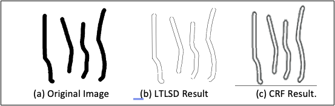
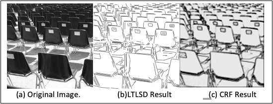
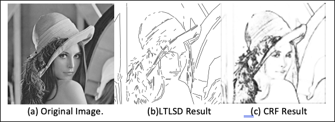
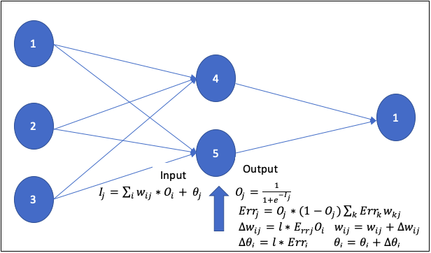
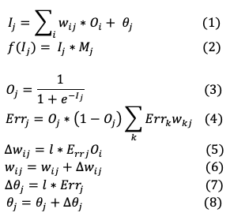
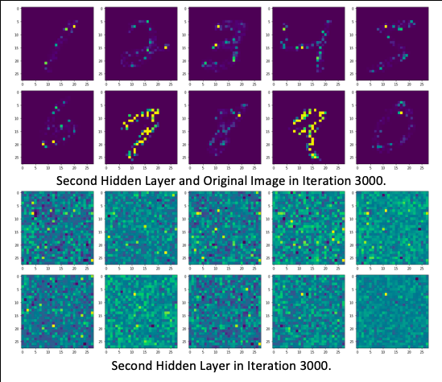
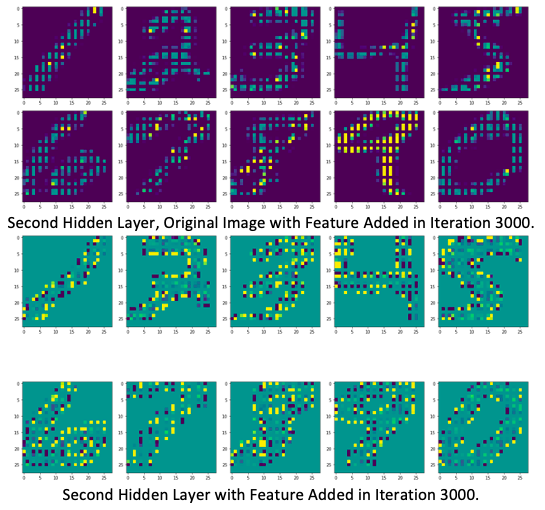

In image processing, we focus on edge detection and object detection. For edge detection, we use Conditional Random Fields (CRF) to improve the existing edge detection methdology. We detect all edges with closed lines and without duplicate edges. For object detection, we add arbitrary features to the objects to deep learning model to enforce deep learning model to learn the characteristics of specific objects.
Edge Detection
The challenge in line segmentation is that the threshold of the gradients have to be determined in the first place, a set of criteria are needed to define the properties of line segments, fractions of the image need to be detected, the validation of the line segment is also determined arbitrarily. We proposed a sematic line segmentation detection model based on conditional random fields (CRF) model. Based on the gradients of the image, this methodology does not require any prior knowledge about the image, no fraction selection, no threshold, no criteria for region growth and rectangle validation.
Methodology
CRF model, as shown in figure 1, can be considered as Markov random fields model. The initial transition probability of each pixel is the same. During each iteration, the state function can average out the different among neighbors and the transition function update the featured pixels. Apparently, state function make the local pixels similar to each other. This operation is especially useful when some pixels are changed because of noise or system errors. When the significance of each pixel is computed not only with the value of the pixel itself but also the values of the adjacent neighbors, system errors and arbitrary noise can be average out. Feature function is defined with the features we pick so that it can consistently increase the significance of features and depress the significance of none features.
Figure 1. Conditional Random Fields Model
Performance
We tested the methodology with several images, such as, the image of simple lines, the image of simple objects, and the portrait of a person. We use the same feature functions and the same Gaussian kernel to detection line segments in three different images. In figure 2(a)(b)(c), we compared out results with the ones generated with Linear Time Line Segmentation Detection (LTLSD) method.

(a)

(b)

(c)
Figure 2. Comparison of CRF results with LTLSD results
In LTLSD result, as shown in figure 2(a), objects in the image are not closed. As shown in figure 2(b), many line segments are doubled which make the image not readable, some lines apparently are shadows but were extracted as lines. As shown in figure 2(c), in the background, a lot of lines are cut. Around the face and the hat, some small circles and short lines are not detected and some are not closed.
Top
Object Detection
Deep learning is generally used in image recognition. For example, deep learning can recognize handwriting of 10 digital numbers in MNIST data set. Deep learning does not require pre-selected feature set for training, as shown in figure 1. During training, deep learning model repeatedly select features, evaluate the quality of the feature set and generate output for next layer. However, What exactly does the deep learning model learn from the training set?

Figure 1. Deep Learning Model
In image processing, there are a lot of features in one image. It is information rich. Normally, one small detail is the combination of many pixels, which is too much for human to quantitatively check each one of the computation units - the pixels.
Deep learning model selects features from entire images. If there are some common patterns which can differentiate the ten categories, those patterns can be chosen as the feature set. Some features are related to the pictures, and some features are related to the objects, but, if we don't enforce the deep learning model to learn from objects, most of the features deep learning model learned are based on the pictures, which means deep learning model does not really learn the objects. This is major flaw in this process. If we change the background of the objects, deep learning can not recognize the objects any more.
Methodology
We add feature function to deep learning model so that deep learning model can be enforced to learn from the objects only, as shown in figure 2.

Figure 2. Feature Enforced Deep Learning Model
Performance

(a) Output from Original Deep Learning Model

(b) Output from Feature Enforced Deep Learning Model
Figure 2. Comparison of Features in Decision layer
In the original output in figure 2(a), we can see some feature spots which are the common patterns in different images but those patterns are not meaningful. After we add feature filter to the deep learning model, the model only picks features from object regions and the output shows the features of the objects, as shown in figure 2(b).
Top